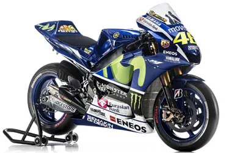

Gestation of the YZR-M1
Like every other competitor, Yamaha had plenty of notice of the change to four-strokes in 2002, so the M1 was actually ready for serious testing a full year before it would be needed to compete.
While official pictures of an unpainted M1 were released in mid-2001, confirming its inline-four layout, the firm explored all its options before settling on the same general configuration as its existing YZF-R1 road bike and R7 world superbike machine.
Although a V4 was another option, the firm’s experience with racing inline-fours meant that it stood a better chance of being competitive out of the box. Yamaha also confirmed that it had considered five or six-cylinder engines, but shied away due to the extra weight.
The conventional layout also gave the bike a useful family link to the firm’s R6 and R1 road bikes. Since the reason for the four-stroke switch was to provide greater R&D and marketing links between road and race machines, that connection can’t be ignored.
Ridden at tests throughout 2001 by former world superbike champion John Kocinski, the M1 was quickly proved to be more powerful and faster than the outgoing two-stroke YZR500 racer.
2002 YZR-M1 (0WM1)
Although Yamaha wouldn’t spill the beans at the time, it’s since emerged that the first YZF-M1 racers didn’t actually use the full 990cc capacity that the rules allowed. For the first half of 2002, the engine was only 942cc, only stretching to the 990cc maximum in a mid-year update. Following Yamaha’s favoured practice at the time, the motor used five valves per cylinder rather than four, with three intakes and two exhaust valves.
While the engine was completely new, Yamaha didn’t want to throw away the years of development it had put into the YZR500. As such, the first generation of M1 had a very similar chassis to that of the two-stroke; a notch was cut into it to make space for the wider new engine’s cylinder head. The swingarm and bodywork were all but identical to the old stroker. An updated frame appeared mid-season.
With over 200bhp, up from 190bhp for the 500, its performance was far higher than its predecessor’s but the M1 initially struggled to come to terms with the clean-sheet design from Honda, the RC211V.
It was the machine that, in the hands of an on-form Max Biaggi, managed to stop Honda from getting a clean sweep of wins in 2002, breaking the RCV’s stranglehold with victories at Brno and Sepang on his way to second in the championship.
Surprising fact? The 2002 M1 ran on old-fashioned carburettors, despite the fact that the concurrent R1 and R7 road bikes were injected. A far cry from the fly-by-wire, traction-controlled machine it would evolve into.
2003 YZR-M1 (0WN3)
If the first-generation M1 was a relatively conservative machine, with YZR500 chassis and carburetted engine, the 2003 model shows the firm finding its confidence with the four-stroke.
On the surface, the changes were clear. The frame and swingarm were no longer anything like the old 500’s, while the bodywork – particularly the nose – shows the first hint of evolving towards the style we’re used to seeing today.
Underneath, the motor gained fuel injection, with two injectors per cylinder, and another 25bhp plus a new engine braking control system that opened the throttles on two cylinders automatically to stop the rear wheel from locking. It was the first step towards ride-by-wire.
The bike’s results didn’t reflect its upgrades, though. Yamaha had lost Biaggi to Honda, and the V5 RC211V was at the peak of its dominance in 2003. It ended the season with no wins and just one podium (third in France for Alex Barros).
2004 YZR-M1 (0WP3)
That’s more like it. The 2004 M1 is the first to carry signature elements that have remained on the bike to this day. The swingarm, braced underneath instead of above, for instance, and even the bodywork around the tail already has a style that’s very similar to the clean-looking Yamahas that would follow.
Inside, it also carried a leap forward that’s become a Yamaha byword – the crossplane crankshaft. Mimicking the firing pattern of a V4 engine while retaining the compact inline packaging, it’s something that the firm has stuck to and that would reach road bikes five years later with the launch of the 2009 R1. The 2004 engine also dropped Yamaha’s previous five-valve-per-cylinder layout in favour of a more conventional four-valve design.
Although launched in Yamaha’s corporate colours, the works racers would run in the familiar Gauloises blue.
On track, the changes worked instantly, along with one other alteration. The nut holding the handlebars was swapped for a part that had previously only been seen on Hondas in MotoGP. It was called Valentino Rossi.
Nine wins meant he cantered home to another championship, but team-mate Carlos Checa and satellite riders Marco Melandri and Norifumi Abe couldn’t come close to replicating his performance, so Honda still won the manufacturer title.
2005 YZR-M1 (0WP4)
There have been a dozen years and two wholesale changes of engine regulations between the 2005 M1 and the latest 2017 version but to the casual onlooker the 2005 bike looks near-identical to all of its successors.
The new look was the result of a push on the aerodynamic side, improving top speeds by 5km/h and fuel economy by 8%. A completely new engine, with camshafts driven by central gears rather than chains, and a new chassis completed the biggest transformation yet for the M1.
And it paid off. Rossi took another title, claiming all of Yamaha’s 11 wins in 2005. It was also enough to hand Yamaha the manufacturer and team titles this time, even though the Hondas of Melandri and Hayden were his closest rivals.
2006 YZR-M1 (0WR3)

Building upon the dominant 2004 and 2005 seasons, Yamaha opted to refine the M1 for 2006.
The main addition was fly-by-wire, adopting launch control, wheelie control and traction control as well as an electronic engine braking regulation system. Power was up a fraction, too, thanks to more revs from revisions to the bore and stroke. Yamaha claimed 240bhp.
The established Yamaha bodywork style was retained, with minor tweaks, but Camel sponsorship gave a distinct new look to the works bikes for 2006.
It turned out to be the most hotly contested MotoGP season yet. Where previous years had been Honda or Yamaha whitewashes (with the common factor of Valentino Rossi on the winning bike each year), 2006 saw Honda, Ducati and Yamaha all vying for wins. Rossi took five for Yamaha, Capirossi three for Ducati, matched by Melandri on the Honda. But it was a consistent Nicky Hayden, with only two wins on his Honda, who snuck the title away at the last round.
2007 YZR-M1 (0WS4)

With 2007 came the new 800cc capacity limit to drop performance from the old 990s, but despite its completely new engine the 2007 M1 was visually near-identical to its predecessor.
Just as Yamaha had opted to stick with the tried-and-tested YZR500 chassis for its first four-stroke, the team decided not to mess too much with the rest of the M1 when it was debuting the new 800cc motor.
Power was down. A lot. Yamaha only claimed 200bhp for the 800, compared to 240bhp the previous year. But the bike was narrower and more aerodynamic as a result of the smaller engine.
In terms of results, 2007 was Ducati and Casey Stoner’s year. The Italian firm made the most of the new rules, and scored an easy title victory as a result. Rossi, on the Yamaha, still managed four wins, though, taking third in the standings.
2008 YZR-M1 (0WS5)
The Yamaha-Rossi combination had long since established itself as the ones to beat, but it’s worth bearing in mind that during their four-year relationship from 2004-2007 the Italian was the only rider to win a race on a Yamaha.
Some might have speculated that it was his skill, rather than the bike’s ability, that brought its success. For 2008, though, he was to be joined by Jorge Lorenzo, fresh from the 250cc class.
And it was Lorenzo that took Yamaha’s first win of 2008, at the third round. Was Rossi under threat?
Not that year. It turned out to be Lorenzo’s only win, while Rossi took nine on his way to another title – he’d now won on 500s, 990s and 800s.
The bike was another gradual evolution. Power was upped to 210bhp, and rose further during the year. The frame gained more longitudinal rigidity but was allowed more lateral flex to improve handling. Aero changes improved the bike’s cooling, reducing engine temperatures by around 10 degrees C.
The headline update, though, was the adoption of pneumatic valves. The system had already been well-proven in F1 racing and even in MotoGP, and helped reduce the weight of the valve system by 40%.
With Lorenzo’s strong results backing Rossi up, Yamaha claimed the manufacturer title as well.
2009 YZR-M1 (0WS8)
The 2009 M1 might look like yet another carbon copy of its predecessor, but as usual the evolutionary process was working hard.
Revisions to the regulations, restricting the number of engines that could be used, meant that reliability and durability was more important than before. Power dropped a fraction, back to around 200bhp, to help stretch engine life.
Other changes included new combustion chamber shapes and cooling that improved piston longevity and a heavier crankshaft to make the engine easier to use. On the chassis side, the wheelbase was stretched and there were further rigidity tweaks.
It was again a winning combination. Rossi, with six wins, took his seventh top class title, but the writing was on the wall with Lorenzo’s four wins. Yamaha also won the team and manufacturer crowns.
2010 YZR-M1 (0WS9)
You don’t change a winning formula, and Yamaha didn’t make wholesale revisions to the 2010 M1. Again, tweaks were the order of the day.
More massaging of the chassis rigidity and yet further wind tunnel work to improve cooling were the main alterations. The new side outlet shapes on the fairing were the visual clue to the latter, helping extract hot air from around the radiator better and bringing engine temperatures down as a result.
The cost-saving rules meant engines had to last even longer in 2010, and Yamaha claimed its M1 motors were good for an impressive 2000km before being retired from front-line service.
Yamaha again won all three titles, but this time it was Lorenzo, not Rossi, leading the charge. The Spaniard’s nine wins dwarfed Rossi’s two victories, with Valentino missing three races thanks to a broken leg from a crash at Mugello. He waved goodbye to Yamaha at the end of the year after relations with Lorenzo became increasingly icy.
2011 YZR-M1 (0WT1)
With three successive titles under its belt and a new superstar rider leading the team, Yamaha didn’t need to change a lot on the M1. And for the 2011 version, it didn’t.
It knew that, from 2012, the rules were changing again – upping capacity to 1000cc and introducing a host of smaller regulation tweaks – so heavily revamping the 800cc M1, already a proven winner, would be pointless.
Again, it was a case of tweaking chassis stiffness and further refining the engine to eke out more performance. Visual changes were among the least for years, with 2010’s efficient fairing shape being retained.
However, it wasn’t going to be enough. Perhaps knowing that its rivals wouldn’t develop their bikes heavily for 2012, Honda did exactly that. Its new signing, Casey Stoner, took the title with Lorenzo and Yamaha a distant second. In total, the 2011 M1 took four wins – three for Lorenzo and one for new signing Ben Spies.
2012 YZR-M1 (0WT3)
As MotoGP entered its third distinct period, the 2012-on 1000cc era, Yamaha’s development followed what had become normal practice for the squad.
With a new engine to develop under the 1000cc rules, the team made a sensible decision not to mess too much with the rest of the formula. The M1’s aerodynamics were good and its chassis had long been a gem, so why change more than necessary.
With power rushing back towards 250bhp, there were some frame changes needed. The wheelbase was stretched to help counter the wheelie-prone tendencies of the torquey new engine and the weight distribution was also reshuffled.
Of course, the engine was almost entirely new, with much development going into making it rideable and responsive rather than pursuing every last horsepower.
The concept worked. Yamaha hit the ground running and Lorenzo – never finishing lower than second – took another world title. A lacklustre year for Spies meant that Yamaha couldn’t retain the manufacturer championship, which went to Honda.
2013 YZR-M1
With Rossi back in the fold after his frustrating couple of years with Ducati, and an on-form Lorenzo also on the squad, Yamaha might have been confident going into 2013.
As such, changes to the bike, at least in its debut form, were subtle to the point of invisibility. There might have been a nip here, a tuck there, but the overall thing was much the same as in 2012.
Right from the off, though, it was clear that rivals Honda had something special. In fact, they had two things – Marc Marquez and a seamless transmission.
By mid-season, at Brno, Yamaha was ready to test its own seamless gearbox. Along with a revised weight distribution it helped give Lorenzo a string of victories in the second half of the year, but he finished just four points shy of new champ Marquez.
Rossi, meanwhile, saw the top step of the podium only once – which was still a huge improvement over his performances on the Ducati in 2011 and 2012.
2014 YZR-M1
As has become customary for Yamaha, the 2014 M1 didn’t show big changes compared to its predecessor. By this stage the firm had really moved on from the idea of launching a ‘new’ bike for each season. Instead upgrades are filtered in constantly, with riders opting to use those that they like, dropping the ones they don’t.
So, paintwork aside, it’s hard to spot changes on the 2014 M1 compared to its predecessor.
During the year, which saw the team gain Movistar sponsorship, Yamaha worked on throttle response to tame the ever-more-powerful engine. Development on the seamless-shift transmission also continued, with Yamaha continuing to trail behind Honda in that respect.
By 2014, Honda’s transmission allowed seamless downshifts as well as upshifts, and gave the RC213V an advantage in braking and corner entry that Yamaha struggled to match.
The season was another Marquez whitewash for Honda, with the two Yamahas trailing into second and third positions. Notably, Rossi beat Lorenzo overall, although both took two wins each.
2015 YZR-M1

While Yamaha’s performance in 2014 didn’t reap the rewards the firm hoped for, on launching the 2015 M1 the firm pointed out that on eight occasions they were less than two seconds from the winner after a full 75-mile race.
This, the theory went, was reason not to go back to the drawing board and to instead continue with the programme of gradual development. The tweaking at this stage had long since passed the point where changes would be easily spotted; minute alterations to geometry, weight distribution and chassis rigidity could make all the difference without any visual clue they’re there. That seamless downshift that Yamaha lacked in 2014 also arrived, helping the bike’s stability during deceleration.
It worked. Both Rossi and Lorenzo saw success on the bike, with seven wins to the Spaniard and four to the Italian during the year. The title went down to the last race, with Lorenzo taking it by just five points. Yamaha also won the manufacturer and team championships yet again.
2016 YZR-M1
Look at any other MotoGP bike over the last decade and its development will be obvious, but Yamaha has so doggedly stuck to the same formula that changes are always hard to spot.
For 2016, apart from a stubbier exhaust big differences are hard to see.
As for all the works teams, Yamaha’s big challenge for 2016 was first to adapt to the spec electronics and traction control systems that were imposed for the year. The new Magneti Marelli system was intended to level the field, and results during the year suggested it did exactly that.
While the launch-spec bike, pictured here, look much like previous models, Yamaha did join the aerodynamics bandwagon in 2016, with the M1 sprouting a variety of moustache-like winglets during the season in pursuit of front downforce.
By the end of the year we’d seen more different winners, on more different machines, than in any previous MotoGP year. Honda, Yamaha, Suzuki and Ducati all took wins, and for the first time in years satellite riders got onto the top step too, with Cal Crutchlow winning twice and Jack Miller taking a win too. In the final totting up, it was Marquez that had the edge. The closely-matched Rossi and Lorenzo took points from each other, perhaps hampering their chances to mount a real title challenge. At the end of the day, the works Movistar Yamaha squad won the team title, but Honda took the manufacturers crown.
2017 YZR-M1
Although the launch pictures of the 2017 Yamaha M1 again show a bike that looks much like its predecessor, we might see something quite different when it’s actually racing.
In testing, the firm has been experimenting with a bulbous side fairing that incorporates internal air guides that are supposed to replicate the downforce-creating effect of the now-banned winglets.
With 2017 rule changes both banning winglets and also limiting the number of alterations that can be made to fairings during the year, it’s vital to start the season with the best possible option. The internal wing setup might be that, since it will allow the hidden air vanes inside the side panels to be altered from one track to another without breaching the rules banning shape alterations.